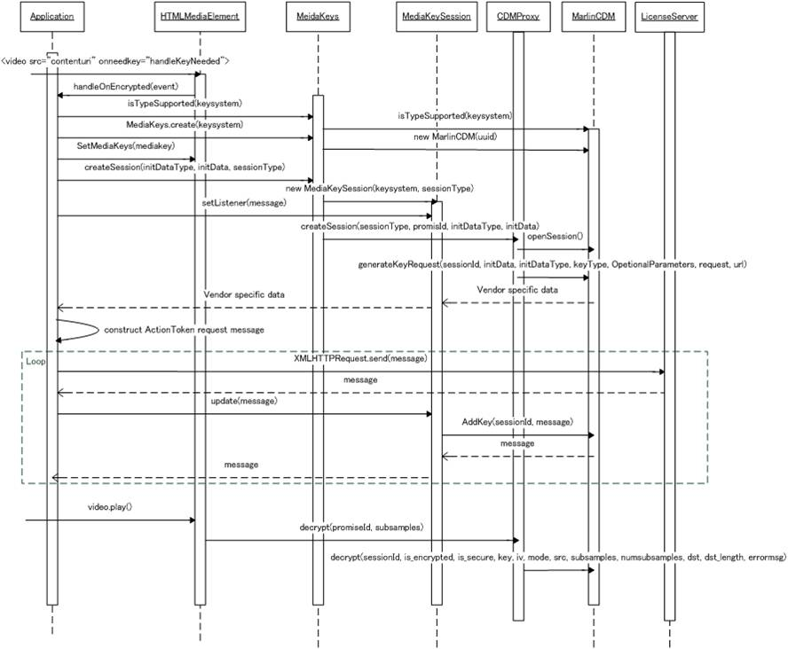

It describes Marlin CDM(Content Decryption Module) interface for Android and HTML5(EME). Marlin CDM can be used to operate the key acquisition of the marlin protected content and to decrypt the marlin protected content on web browser adnd web browser platform.
More...
It describes Marlin CDM(Content Decryption Module) interface for Android and HTML5(EME). Marlin CDM can be used to operate the key acquisition of the marlin protected content and to decrypt the marlin protected content on web browser adnd web browser platform.
Marlin CDM includes below parts.
- Marlin Drm Plugin : It is glue code to absorb API difference between Marlin CDM Interface and Android Modular Drm Framework.
- Marlin CDM Adapter : It is glue code to absorb API difference between Marlin CDM Interface and each browsers EME.
- Marlin CDM Interface : It is just aan interface between Android or Web browser framework and Marlin CDM implementation. It is included in Marlin CDM Engine in actual when it is built.
- Marlin CDM Engine : It is cdm implementation delegating HTTP transaction responsibility with License server to Application and manages the decrypt session and license management, and others required for as a CDM responsibility.
- Marlin Agent Handler : It is a Porting layer to support Marlin DRM solution in conjunction with specialized SDK. With this layer customization, implementer can use any Marlin DRM Agent.
The following diagram shows the reference sequence flow while playing marlin protected media on EME case.

- For streaming the marlin protected content with EME, Javascript Application needs to register the onEncrypted event to HTMLMediaElement <video> tag.
- After the regitering the event, onEncrypted event will be triggered from HTMLMediaElement and it is time to create MediaKeys. During onEncrypted event, initialization data will be send to
- By using promise, after creating MediaKeys, MediaKeys object is set to HTMLMediaElement.
- createSession is called to create keysession and register it to CDMproxy, which will manage sessions for requesting key usage operation. By this call, pssh box which was extracted in Browser media stack is provided.
- Once the session is created and registered to proxy, it will trigger generateKeyRequest, to supply pssh box to MarlinCDM. MarlinCDM will check pssh box if the medt box is added. if there is no medt, MarlinCDM will return json message which has vendor specific data in queryKeyRequest property.
- After application get json message, Action Token request will be constructed and sent to server. this HTTP request will be service specific protocol.
- Then application will get action token to continue license acquisition, update method will be called to provide action token to MarlinCDM.
- ActionToken process is done by Marlin CDM and Marlin Agent so that App will get HTTP request message.
- Until the license will be acquired, HTTP request message will be sent to server and provided response is supplied to MarlinCDM by update method again and again.
- When the license file is acquired, application will get json message which will have CompleteNotification property.
- When application start rendering video, media sample will be sent to CDMProxy in subsamples structure by decrypt call, and then the samples will be decrypted by Marlin CDM and Marlin Agent with the content key.
- Version
- 1.0

 1.8.3.1
1.8.3.1